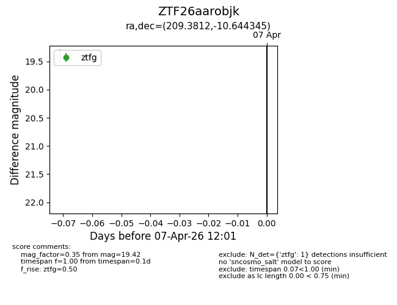
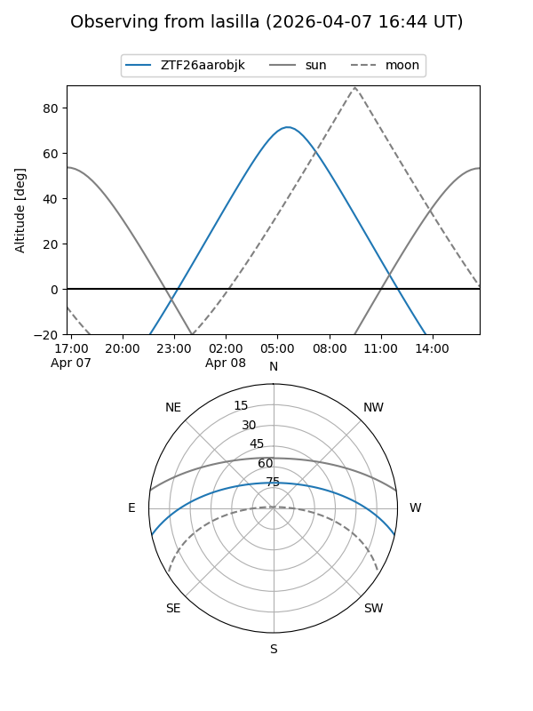
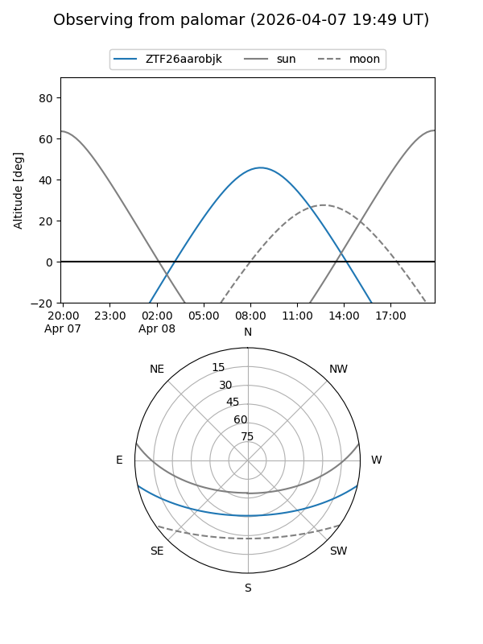

ZTF26aarobjk
Target ZTF26aarobjk at 2026-04-07 12:07
Aliases and brokers:
FINK: link
Lasair: link
ALeRCE: link
alt names
ZTF26aarobjk (ztf,fink_ztf)
Coordinates:
equatorial (ra, dec) = 209.3812,-10.64434
equatorial (HMS+DMS) = 13:57:31.50,-10:38:39.64
galactic (l, b) = (328.1287,+48.96724)
Flags:
Photometry:
last ztfg=19.42
1 ztfg detections
Lightcurve

Visibility


Additional plots